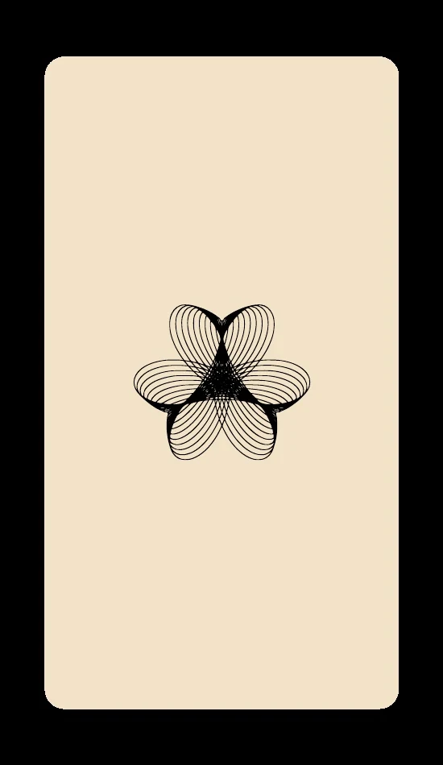

Oracle · Lineage · Ancestral Wisdom
Type your code then click Unlock
PsychicSoulStar · Voices of the Ancestors Oracle

Tap the deck or press Draw to reveal a card
Scroll down for the full reading
Saved on this device only. Clearing your browser data erases it — use Copy my journal to keep a permanent record.